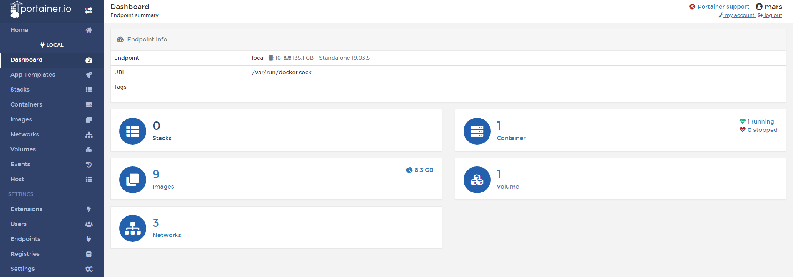
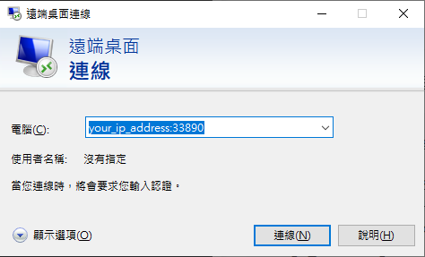
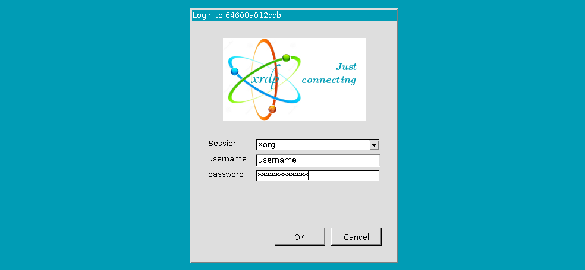
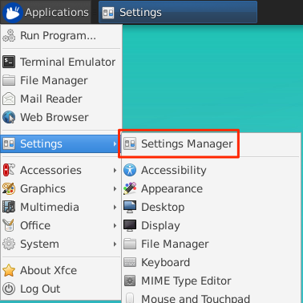
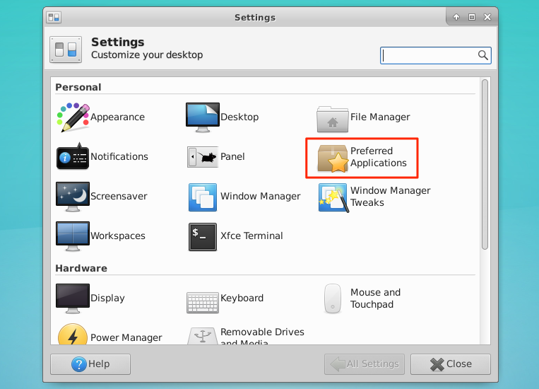
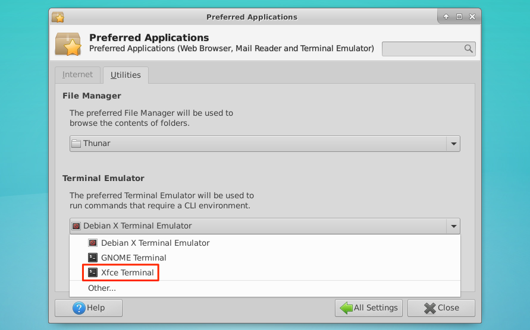

前言
網路上關於Docker的資訊已經有很多了，這邊就不多作介紹了，只針對幾個常用和在我的實作上有用到的指令和套件去做介紹。
用一張圖來簡單的說明Docker的架構：

Portainer
Portainer是一個用來管理Docker的工具，他可以透過網頁來查看或管理目前執行的container等等，也可以很快速地進入一個正在執行的container，簡而言之就是一種用來管理Docker的圖形化介面。
安裝
可以用docker search portainer來查看目前有哪些可以用的資源：
1 | sudo docker search portainer |
2 | # output |
3 | NAME DESCRIPTION STARS OFFICIAL AUTOMATED |
4 | portainer/portainer Making Docker management easy. https://porta… 1439 |
5 | portainer/agent An agent used to manage all the resources in… 50 |
6 | portainer/templates App Templates for Portainer http://portainer… 18 |
下載：
1 | docker pull portainer/portainer |
依據官方的文件啟動container，當然你可以自訂你想要的port (第一個是host port，第二個是container port)：
1 | docker volume create portainer_data |
2 | docker run -d -p 9000:9000 \ |
3 | --name portainer \ |
4 | --restart always \ |
5 | -v /var/run/docker.sock:/var/run/docker.sock \ |
6 | -v portainer_data:/data \ |
7 | portainer/portainer |
打開瀏覽器就能看到：

這樣就可以管理docker的image、container跟volume，還可以看到其他的資源。
常用Docker指令
記錄一些常用的Docker指令，以備不時之需，不過我想protainer應該可以取代大部分功能：
1 | # 查看目前的image |
2 | docker images |
3 | # 刪除image |
4 | docker rmi [OPTIONS] IMAGE [IMAGE...] |
5 | # 查看目前運行的 container |
6 | docker ps |
7 | # 查看目前全部的 container（ 包含停止狀態的 container ） |
8 | docker ps -a |
9 | # 停止 Container |
10 | docker stop [OPTIONS] CONTAINER [CONTAINER...] |
11 | # 删除 Container |
12 | docker rm [OPTIONS] CONTAINER [CONTAINER...] |
13 | # 查看 Container 詳細資料 |
14 | docker inspect [OPTIONS] NAME|ID [NAME|ID...] |
15 | # 查看 log |
16 | docker logs [OPTIONS] CONTAINER |
17 | # 顯示容器資源 ( CPU , I/O ...... ) |
18 | docker stats [OPTIONS] [CONTAINER...] |
19 | # 停止指定的 CONTAINER 中全部的 processes |
20 | docker pause CONTAINER [CONTAINER...] |
21 | # 恢復指定暫停的 CONTAINER 中全部的 processes |
22 | docker unpause CONTAINER [CONTAINER...] |
docker stop: process 級別。
docker pause: container 級別。
實作Deep Learning環境
我這裡選擇的image是ubuntu18.04，然後透過ARG來新增使用者：
1 | FROM ubuntu:18.04 |
2 | MAINTAINER jim jimhsu11@gmail.com |
3 | |
4 | ARG USERNAME |
5 | ARG USERPWD |
DEBIAN_FRONTEND noninteractive
接下來這個步驟很重要：
1 | # debconf to be non-interactive |
2 | ENV DEBIAN_FRONTEND noninteractive |
因為ubuntu在安裝的時候，某些套件會需要輸入指令，這邊將它設定成沒有交互介面的模式來安裝。
Add User
接著就是新增使用者，這邊新增使用者主要是為了之後的xrdp套件，在run docker的時候可以不用再去建立使用者，不過在build的時候要記得加上ARG參數:
1 | # Update and Add User |
2 | RUN apt-get update \ |
3 | && apt-get install -y vim sudo wget \ |
4 | && useradd -ms /bin/bash ${USERNAME}\ |
5 | && sudo adduser ${USERNAME} sudo\ |
6 | && echo ${USERNAME}:${USERPWD} | chpasswd |
xrdp
這邊安裝xrdp套件，讓Windows系統可以透過遠端桌面連線連線到Container：
1 | # xrdp |
2 | RUN apt-get update \ |
3 | && apt-get install -y xfce4 xfce4-goodies xorg dbus-x11 x11-xserver-utils xrdp \ |
4 | && echo xfce4-session > /home/${USERNAME}/.xsession \ |
5 | && sed -i "s/^exec.*Xsession$/startxfce4/g" "/etc/xrdp/startwm.sh" \ |
6 | && service xrdp restart |
這邊跟一般安裝xrdp的過程一樣，其中sed是將/etc/xrdp/startwm.sh最後一行替換成startxfce4。
Anaconda
這邊使用Anaconda來管理python的套件，雖然已經使用Docker來隔離系統了，不過還是習慣用Anaconda來建立python環境：
1 | # Install Anaconda |
2 | RUN wget --quiet https://repo.continuum.io/archive/Anaconda3-5.0.1-Linux-x86_64.sh -O ~/anaconda.sh \ |
3 | && /bin/bash ~/anaconda.sh -b -p /opt/conda \ |
4 | && rm ~/anaconda.sh \ |
5 | && echo "export PATH=/opt/conda/bin:$PATH" >> /home/${USERNAME}/.bashrc \ |
6 | && sudo chown -R ${USERNAME}:${USERNAME} /opt/conda |
這邊wget後面的網址可以自己去更改，找符合自己需求的版本來安裝。
然後安裝Anaconda的時候會需要輸入一些指令，所以用-b使用預設值安裝。
-p後面接的是安裝位置，這邊也可以自己去調整。
cuda & cudnn
我這邊cuda使用的版本是10.0，雖然在系統上是安裝的版本是10.1，不過經過測試，是不影響使用的。
我是使用Nvidia/cuda的Dockerfile指令來安裝cuda和cudnn，分別將nvidia/cuda:10.0-base-ubuntu18.04、nvidia/cuda:10.0-runtime-ubuntu18.04和nvidia/cuda:10.0-cudnn7-runtime-ubuntu18.04上需要的Dockerfile指令，加到自己的Dockerfile：
1 | #-------------------From Nvidia------------------- |
2 | # Nvidia install list |
3 | RUN apt-get update \ |
4 | && apt-get install -y --no-install-recommends gnupg2 curl ca-certificates \ |
5 | && curl -fsSL https://developer.download.nvidia.com/compute/cuda/repos/ubuntu1804/x86_64/7fa2af80.pub | apt-key add - \ |
6 | && echo "deb https://developer.download.nvidia.com/compute/cuda/repos/ubuntu1804/x86_64 /" > /etc/apt/sources.list.d/cuda.list \ |
7 | && echo "deb https://developer.download.nvidia.com/compute/machine-learning/repos/ubuntu1804/x86_64 /" > /etc/apt/sources.list.d/nvidia-ml.list \ |
8 | && apt-get purge --autoremove -y curl \ |
9 | && rm -rf /var/lib/apt/lists/* |
10 | |
11 | ENV CUDA_VERSION 10.0.130 |
12 | ENV CUDA_PKG_VERSION 10-0=$CUDA_VERSION-1 |
13 | |
14 | # For libraries in the cuda-compat-* package: https://docs.nvidia.com/cuda/eula/index.html#attachment-a |
15 | RUN apt-get update \ |
16 | && apt-get install -y --no-install-recommends \ |
17 | cuda-cudart-$CUDA_PKG_VERSION \ |
18 | cuda-compat-10-0 \ |
19 | && ln -s cuda-10.0 /usr/local/cuda \ |
20 | && rm -rf /var/lib/apt/lists/* |
21 | |
22 | ENV PATH /usr/local/nvidia/bin:/usr/local/cuda/bin:${PATH} |
23 | ENV LD_LIBRARY_PATH /usr/local/nvidia/lib:/usr/local/nvidia/lib64 |
24 | ENV NCCL_VERSION 2.4.2 |
25 | |
26 | RUN apt-get update \ |
27 | && apt-get install -y --no-install-recommends \ |
28 | cuda-libraries-$CUDA_PKG_VERSION \ |
29 | cuda-nvtx-$CUDA_PKG_VERSION \ |
30 | libnccl2=$NCCL_VERSION-1+cuda10.0 \ |
31 | && apt-mark hold libnccl2 \ |
32 | && rm -rf /var/lib/apt/lists/* |
33 | |
34 | ENV CUDNN_VERSION 7.6.0.64 |
35 | |
36 | LABEL com.nvidia.cudnn.version="${CUDNN_VERSION}" |
37 | |
38 | RUN apt-get update \ |
39 | && apt-get install -y --no-install-recommends \ |
40 | libcudnn7=$CUDNN_VERSION-1+cuda10.0 \ |
41 | && apt-mark hold libcudnn7 \ |
42 | && rm -rf /var/lib/apt/lists/* |
43 | #-------------------Nvidia End------------------- |
這邊有試過用nvidia本身的image來建立，不過失敗了，後來將nvidia上Dockerfile複製自己需要的部分卻成功了，原因沒有深究，如果有人知道的話，歡迎留言告訴我。
以上就是我的Dockerfile所有的內容。
Build & Run & Upload
上面可以看到我的功能是一層一層添加的，實際上實作完一層，我就會build和run一次那個Dockerfile，以確保我的Dockerfile沒有寫錯，所以接下來就是將剛剛寫完的Dockerfile建立起來。
Build Dockerfile
進入Dockerfile所在的資料夾，執行以下指令：
1 | sudo docker build -t image_name:tag \ |
2 | --build-arg USERNAME=username \ |
3 | --build-arg USERPWD=yourpassword . |
-t後面接的是image的名字跟tag，USERNAME跟USERPWD就是登入系統時要輸入的帳密，這樣image就建立好了。
Run Image
執行下列命令就可以進入到創立的container了：
1 | sudo docker run --gpus device=1 -it \ |
2 | -p 33890:3389 \ |
3 | -v /mnt/SSD:/data/SSD \ |
4 | -v /mnt/HDD:/data/HDD \ |
5 | -v /docker_config/config:/config \ |
6 | image_name:tag |
--gpus:可以指令你要用的gpu，當然是要你電腦上有安裝複數的gpu才能指令，不然可以直接用--gpus all來使用全部的gpu。
-p:因為有使用xrdp套件，而這個套件使用的port是3389，所以要將container的port映射到主機上的port，這邊選擇加上一個0。
-v:可以將主機上的資料夾位置映射到container上面，也可以是docker的volume映射到container上。這邊要注意的是冒號，冒號前是主機上的位置；後面是container上的位置。
-it：建立好後會直接進入container。
接下來要啟動xrdp套件才可以連線進去，執行：
1 | service xrdp restart |
啟動遠端桌面連線程式，輸入你主機的ip：

再輸入前面設定的帳號密碼：

進入到你的環境後，要記得進入Setting Manager：

打開Preferred Applications：

選擇Utilities，將預設的Terminal Emulator改成Xfce Terminal：

這樣就可以用Terminal了。
Docker Hub
實作完自己的Dockerfile之後，用Docker Hub備份或是分享到網上。
第一步要當然是註冊一個帳號，再利用docker login來登入：
1 | docker login |
2 | # output |
3 | Login with your Docker ID to push and pull images from Docker Hub. If you don't have a Docker ID, head over to https://hub.docker.com to create one. |
4 | Username: username |
5 | Password: yourpassword |
登入完，直接用docker push來上傳就行了:
1 | docker push yourusername/image_name:tag |
連結
Docker Hub：https://hub.docker.com/repository/docker/augustushsu/ubuntu18.04-xrdp